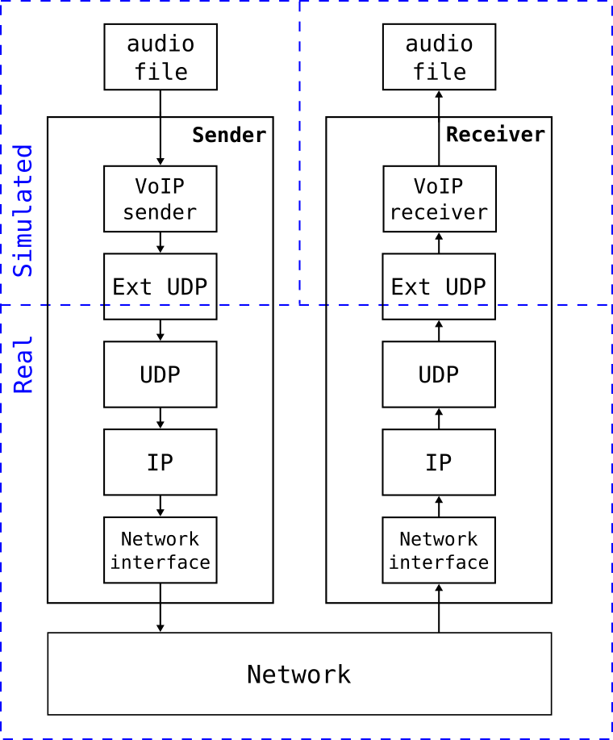
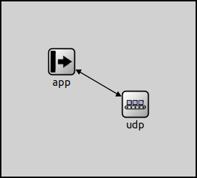
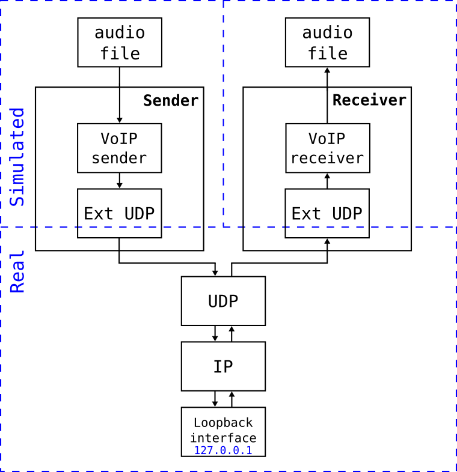
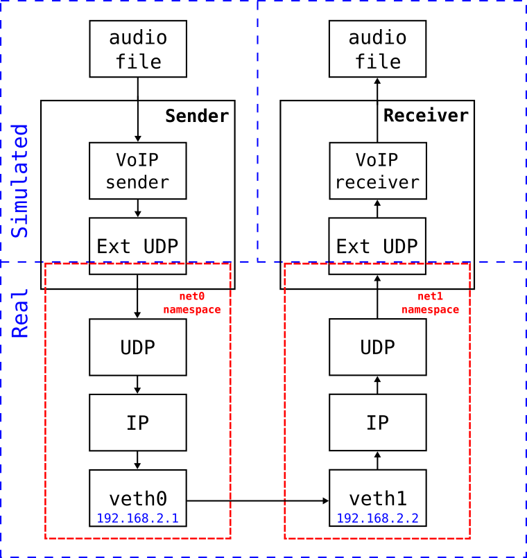
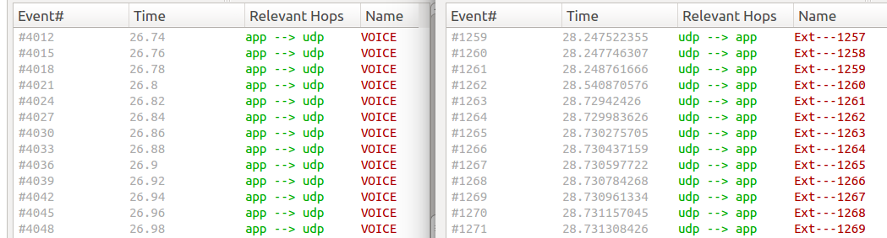

Using Simulated Applications in a Real Network¶
Goals¶
This showcase demonstrates how a simulated application can function as a real application and communicate over a real network. This opens up a range of possibilities, such as testing the behavior of a simulation model over a real network, or evaluating its interoperability with real-world implementations of the same application.
The goal is achieved by utilizing the INET application-layer module within a “wrapper” simulation. In this simulation, (1) we map INET sockets to the real sockets of the host operating system (OS), thus allowing application traffic to go through the network stack of the host OS, and (2) we employ a real-time event scheduler to ensure that timings align with real time.
As an example, the demonstration uses a Voice over IP (VoIP) application. The sender and receiver applications run in separate simulations in real time, and send realistic VoIP traffic (contents of an audio file) over the host network. The received audio is saved to a file, which can be compared to the original to assess the impact of network transmission on audio quality.
Please note that the VoipStream and NetworkEmulationSupport features of the INET
Framework must be enabled for this demonstration (they are disabled by default),
and it is only compatible with Linux systems.
4.6Introduction¶
Let’s see a bit of background first. INET contains several components to allow a variety of hardware-in-the-loop (HIL) simulation scenarios. Specifically, it contains one or two additional variants for several protocols and interfaces: an “ext lower” and/or an “ext upper” variant. The naming indicates that the given “half” of the protocol or interface connects to something external to the simulation, namely to an interface or socket on the host OS. This showcase demonstrates how such modules make it possible to build HIL scenarios like real apps/devices in a simulated network, or simulated apps/devices in a real network.
In this showcase, we’ll use ExtLowerUdp. This is a module that looks like
a normal UDP module to its higher layers (i.e. applications), but in fact it
sends and receives real UDP packets via the network stack of the host OS. In our
simulation, we’ll let a pair of VoIP applications that normally use the
Udp module communicate over ExtLowerUdp, and we’ll make the actual
UDP packets travel across a real network so that we can see how that affects
voice quality. The simulations will be run under a real-time event scheduler
(inet::RealTimeScheduler), so that timings correspond to real time.
Note that the division of the simulated and real parts of the network is arbitrary; INET has support for dividing the network at other levels of the protocol stack; for example, at the link layer.
For an more information on emulation in INET, read the Emulation section in the User’s Guide.
The Simulation Setup¶
The following figure illustrates the simulation setup:
{kind=link}

We’ll use the VoipStreamSender and VoipStreamReceiver modules to generate the realistic VoIP traffic, and ExtLowerUdp modules to connect the applications to the real network. These modules are the only ones we need, so the following “network” will suffice:
network AppContainer
{
submodules:
app: <> like IApp;
udp: ExtLowerUdp;
connections:
app.socketOut --> udp.appIn;
app.socketIn <-- udp.appOut;
}
We’ll configure the app submodule to have type VoipStreamSender and
VoipStreamReceiver on the sender and the receiver side, respectively.
Both networks look like the following when run under Qtenv:
{kind=link}

Note
The AppContainer module used in this showcase is quite generic. It can
turn any (UDP-only) simulated application into a real-life application that
communicates over the network stack of the host OS.
Operation¶
When we run the simulations, VoipStreamSender in the sender-side simulation process will generate VoIP packets and send them to its ExtLowerUdp module. ExtLowerUdp maintains a real UDP socket in the host OS, so the packets it receives from the application will be sent in real UDP packets over the protocol stack of the host OS.
The UDP packets will then travel through the real network, and find their way to the node which runs the receiver-side simulation process. The packets will be received by the real UDP socket that ExtLowerUdp maintains there, converted to simulation packets, then sent up to the VoipStreamReceiver module. The VoipStreamReceiver module receives and decodes them, and creates an audio file at the end of the simulation.
Configuration¶
In the simulation, only a sender node and a receiver node are needed in order to send the packets into the real network on one side and receive them on the other side. The two simulated nodes are in separate parts of the whole network, so they are defined in separate networks in the NED file, and run in separate simulations.
The ExtLowerUdp module behaves just like the Udp module from the point of view
of the modules above them. In this showcase (aside from assigning the ExtLowerUdp
modules to network namespaces) only the VoIP modules need to be configured.
The simulations are defined in separate configurations of voipsender.ini and voipreceiver.ini.
The VoipStreamSender module transmits the contents of an audio file as VoIP traffic. The module resamples the audio, encodes it with a codec, chops it into packets and sends the packets via UDP. By default, it creates packets containing 20 ms of audio, and sends a packet every 20 ms. The codec, the sample rate, the time length of the audio packets, and other settings can be specified by parameters.
The VoipStreamReceiver module can receive this data stream, decode it and save it as an audio file. The module numbers the incoming packets, and discards out-of-order ones. There is a playout delay (specified by parameter; by default 20 ms) simulating a de-jitter buffer.
The VoipStreamSender and VoipStreamReceiver modules are configured just like they would be in a fully simulated scenario, no special configuration is needed. Here is the relevant configuration for VoipStreamSender:
network = AppContainer
scheduler-class = "inet::RealTimeScheduler"
sim-time-limit = 67s
*.app.typename = "VoipStreamSender"
*.app.packetTimeLength = 20ms
*.app.codec = "pcm_s16le"
*.app.sampleRate = 32000Hz
*.app.voipHeaderSize = 40B
*.app.voipSilenceThreshold = 100
*.app.repeatCount = 2
*.app.soundFile = "Stereotype_News.mp3"
*.app.localPort = -1
*.app.destPort = 60001
Here is the relevant configuration for VoipStreamReceiver:
network = AppContainer
scheduler-class = "inet::RealTimeScheduler"
sim-time-limit = 70s
*.app.typename = "VoipStreamReceiver"
*.app.localPort = 60001
*.app.resultFile = "${resultdir}/received.wav"
Running¶
This section presents various configurations for running the VoIP simulation. It includes a setup for running the experiment over a real network, and various configurations for running it in a virtual network on the local computer.
Note
A different showcase (Using Mininet to Set Up the Virtual Network) is dedicated to showing the use of Mininet for setting up the virtual network.
Over a Real Network¶
To try this showcase over a real network, you need to install the simulation on two different machines. When it is done:
First, run the following command on the receiver side:
$ inet -u Cmdenv voipreceiver.ini
Once the receiver is running, enter the following command on the sender side
(replace 10.0.0.8 with the IP address of the host the receiver side is
running on):
$ inet -u Cmdenv voipsender.ini '--*.app.destAddress="10.0.0.8"'
That’s all. When the receiver-side simulation exits, you’ll find the received
audio file in results/received.wav. You may need to raise the CPU time limit
in the receiver-side simulation so that it does not exit prematurely.
Using the Loopback Interface¶
In this configuration, both simulations run on the same host, and packets will go via the loopback interface. Each sent packet goes down the protocol stack, through the loopback interface, and back up the protocol stack into the other simulation process.
The setup for the loopback interface case is illustrated by the following figure:
{kind=link}

You can run this scenario in the same way as the previous one, just specify
127.0.0.1 for destination address.
$ inet -u Cmdenv voipreceiver.ini &
$ inet -u Cmdenv voipsender.ini '--*.app.destAddress="127.0.0.1"'
Loopback Interface with Realistic Network Conditions¶
The Linux kernel allows us to apply delay, jitter, packet loss and data corruption to the packets traveling through the loopback interface. We can use this feature to simulate the effects of the packets going through a real network.
To try it, issue the following command before running the simulations. The command adds some delay (10ms with 1ms random variation), packet loss and data corruption to the traffic passing through the loopback interface:
$ sudo tc qdisc add dev lo root netem loss 1% corrupt 5% delay 10ms 1ms
When you are done with the experiments, run the following command to restore the loopback interface to its original state:
$ sudo tc qdisc del dev lo root
Alternatively, you can use the provided run_loopback
script that automates the above procedure.
Using Virtual Ethernet Interfaces¶
This configuration uses network namespaces and virtual Ethernet interfaces, which are features provided by the Linux kernel. A network namespace provides a complete virtualized network stack independent from the main network stack of the host OS.
We’ll create two namespaces, net0 and net1. Then we’ll create a virtual
Ethernet interface in both, and name them veth0 and veth1. The two
interfaces will be connected to each other. This setup is illustrated below:
{kind=link}

It can be produced with the following lengthy sequence of commands that needs to be run as root:
# create namespaces
ip netns add net0
ip netns add net1
# create a virtual ethernet interface in each namespace, assign IP addresses to them and bring them up
ip link add veth0 netns net0 type veth peer name veth1 netns net1
ip netns exec net0 ip addr add 192.168.2.1 dev veth0
ip netns exec net1 ip addr add 192.168.2.2 dev veth1
ip netns exec net0 ip link set veth0 up
ip netns exec net1 ip link set veth1 up
# add routes
ip netns exec net0 route add -net 192.168.2.0 netmask 255.255.255.0 dev veth0
ip netns exec net1 route add -net 192.168.2.0 netmask 255.255.255.0 dev veth1
# add delay+loss+corruption to veth0 interface
ip netns exec net0 tc qdisc add dev veth0 root netem loss 1% corrupt 5% delay 10ms 1ms
The commands create the two namespaces, and a veth interface in each. Then
they add routes; a route for both direction is required because even though VoIP
traffic uses only one direction, there is an ARP exchange at the beginning. Note
that the veth interfaces are created in pairs, and are automatically connected
to each other. The last command adds some some delay, packet loss and corruption
to the veth0 interface like we did in the loopback-based setup.
In the simulation configurations, we need to tell the ExtLowerUdp modules
to use the net0 / net1 namespaces, and set the sender’s destAddress
parameter to 192.168.2.2.
In voipsender.ini:
[Config VirtualEth]
*.app.destAddress = "192.168.2.2"
*.udp.namespace = "net0"
In voipreceiver.ini:
[Config VirtualEth]
*.udp.namespace = "net1"
You can run the simulations with the following commands:
$ inet -s -u Cmdenv voipreceiver.ini -c VirtualEth &
$ inet -s -u Cmdenv voipsender.ini -c VirtualEth
When you are finished, you can remove the virtual Ethernet interfaces by deleting the namespaces with the following commands (also to be run as root):
ip netns del net0
ip netns del net1
If you don’t want to enter the setup and teardown commands manually, you can use
the provided veth_setup and
veth_teardown scripts (with sudo), or use
run_veth that automates the complete procedure.
Results¶
Let’s look at results obtained from running the loopback-based configuration with a lossy link. As a reference, you can listen to the original audio file by clicking the play button below:
Here is the received audio file:
The quality of the received sound is degraded compared to the original. The sender creates and sends audio packets every 20ms, but when they go through the host OS protocol stack, the packets are sent in bursts, as illustrated by the following image. The image displays the time for packets sent by the sender (left) and packets received by the receiver (right):
{kind=link}

The traffic becomes bursty before the delay and jitter are applied. The time difference between the packets in a burst is smaller than the applied jitter, so that some of the packets are reordered. The receiver drops out-of-order packets, thus the audio quality suffers.
Without the jitter, the packets would still arrive in bursts, but not reordered.
The quality would be nearly as good as the original file. (To reduce burstiness
and keep the packet order, a data rate can be specified in the netem command,
e.g. rate 1000kbps. This eliminates reordering in this scenario.)
Sources: voipsender.ini,
voipreceiver.ini,
AppContainer.ned,
run_loopback, run_veth,
veth_setup, veth_teardown
Try It Yourself¶
If you already have INET and OMNeT++ installed, start the IDE by typing
omnetpp, import the INET project into the IDE, then navigate to the
inet/showcases/emulation/voip folder in the Project Explorer. There, you can view
and edit the showcase files, run simulations, and analyze results.
Otherwise, there is an easy way to install INET and OMNeT++ using opp_env, and run the simulation interactively.
Ensure that opp_env is installed on your system, then execute:
$ opp_env install --init -w inet-workspace inet-4.6 --build-modes=release --options=inet:full
$ cd inet-workspace
$ sudo setcap cap_sys_admin+ep omnetpp-*/bin/opp_run_release
$ opp_env shell --options=inet:full
This command creates an inet-workspace directory, installs the appropriate
versions of INET and OMNeT++ within it, and opens an interactive shell. (The
--options=inet:full argument is required to enable the Emulation feature in
opp_env.)
Inside the shell, start the IDE by typing omnetpp, import the INET project,
then start exploring.
To experiment with the emulation examples, navigate to the
inet/showcases/emulation/voip directory. From there, you can execute the
commands outlined in the previous sections.
Discussion¶
Use this page in the GitHub issue tracker for commenting on this showcase.